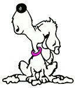

Ouvert lundi, mardi, jeudi et vendredi de 9h à 13h et de 14h à 18h
Mercredi et samedi de 9h à 13h
Petit ou gros, poils ras ou poils long, tous les chiens se plaisent au Ch'ti Poilu.
Les équipements, l'accueil et le savoir-faire de Cyrielle et Eloïse offrent à votre animal bien plus qu'un simple toilettage.
Coupe, tonte, bains, ... Du plus simple au plus complet, découvrez les soins et formules tout compris pour le toilettage de votre animal au Ch'ti Poilu.
Pour prendre rendez-vous ou poser vos questions, n'hésitez pas à nous appeler au 03 20 86 73 00
Le salon CH’TI POILU se trouve auUne séance de toilettage dure de 2 à 3 heures en fonction de la taille de votre chien.
Ce moment doit être très agréable pour votre animal.
Au Ch'ti Poilu, pas de travail "à la chaine", nous laissons le temps à votre chien de s'aclimater à l'environnement du salon, de faire connaissance avec les autre chiens et surtout de se détendre.
Nos équipements ont été choisis spécialement pour favoriser le bien-être de votre chien.
Pour que la séance de toilettage soit aussi agréable pour vous qu'elle l'est pour votre chien, le Ch'ti Poilu a prévu des services pour vous faciliter la vie.
Pour ne pas vous faire attendre, nous vous prévenons lorsque le toilettage est terminé.
Si vous ne pouvez ou ne souhaitez pas vous déplacer, nous prenons en charge votre animal à votre domicile et le déposons une fois sa séance de toilettage terminée.
C'est pour cela que le Ch'ti Poilu vous propose les croquettes Atavik. La première et seule entreprise française à ne proposer que des aliments sans céréales !